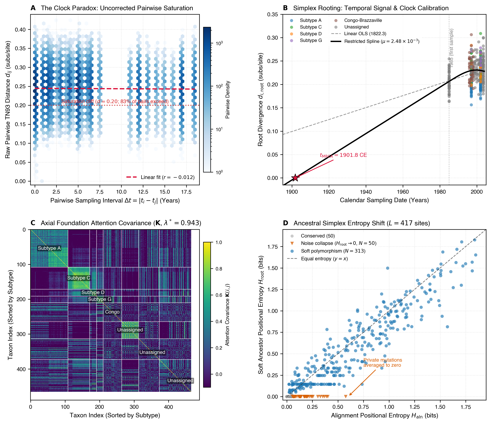
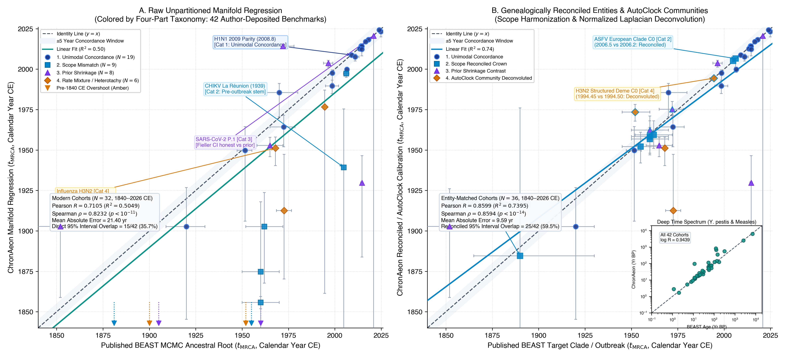
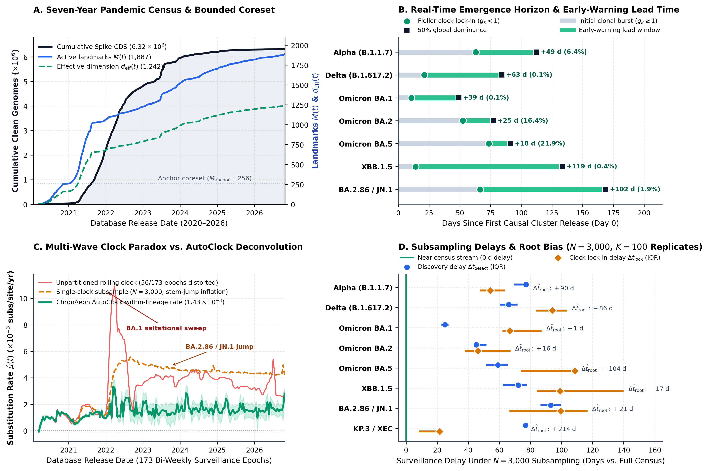

For forty years, calibrating a molecular clock has required first building a phylogenetic tree—forcing pandemic surveillance pipelines to discard over 99.9% of sequences or spend weeks waiting on MCMC chains.
ChronAeon decouples molecular dating from tree reconstruction, using continuous profile roots, HyphAeon foundation-model covariance, AutoClock spectral partitioning, and online Nyström coresets to calibrate millions of genomes in seconds and detect emerging variant clocks weeks before global dominance.
Matches published Bayesian rates and root dates across five millennia ($\log_{10} R = 0.94$) in seconds while outpacing mutation-tree MCMC (Delphy) by two orders of magnitude.
Recovers the 1988 Lenski LTEE founding date within 8 months and maintains 93%–98% Fieller CI coverage across 280 relaxed-clock and 148,516 forward-time epidemics.
Ingests an uncurated century-long BV-BRC dump across 16 HA subtypes, automatically quarantining 453 frozen/lab outliers and separating 72 host-specific sublineage clocks.
Streams 6,317,042 SARS-CoV-2 Spike sequences (2020–2026) in flat memory ($M = 1{,}887$ landmarks), locking onto Alpha, Delta, BA.1, XBB.1.5, and JN.1 clocks weeks before 50% dominance.
Why do we build phylogenetic trees when we want to calibrate a molecular clock? If you want to trace a hospital transmission chain or reconstruct an ancestral protein, you need an explicit bifurcating tree. But when you ask how fast a pathogen is mutating ($\mu$) or when a lineage emerged ($t_{\mathrm{MRCA}}$), a tree performs only two algebraic jobs: it anchors the ancestral root and weights shared evolutionary history across tips. Sampling millions of discrete tree topologies via MCMC just to anchor a root and populate a covariance matrix is computationally indirect—and at pandemic scale, where $N \sim 10^6\text{ to }10^7$ sequences vastly exceed genome length $L \sim 10^3\text{ to }10^4$, it forces investigators to throw away over 99.9% of the archive by subsampling.
Continuing our push to rethink core molecular evolution algorithms from first principles with AI-accelerated research workflows—alongside HyphAeon, dFEL, and RhizAeon—our updated manuscript and replication suite with Darren Martin, Brittany Rife Magalis, Sudhir Kumar, Jordan Zehr, Danielle Callan, Joel Wertheim, Steven Weaver, and Anton Nekrutenko introduces ChronAeon (Zenodo v2.0, WebAssembly app, interactive benchmarks).
To see why naive distance dating fails—and how continuous geometry fixes it—consider the classic calibration of pandemic HIV-1 Group M in Central Africa ($N = 466$ env sequences sampled between 1985 and 2004; Faria et al., 2014). If you plot raw pairwise Tamura-Nei distances against sampling time differences, you get a flat cloud ($r = -0.012$; Fig. 1a) with over 80% of pairs beyond the mutational saturation zone ($d > 0.20$). Even if you anchor to an early consensus sequence, urban transmission chains share long internal branches (phylogenetic pseudoreplication) and deep inter-subtype branches evolve faster than recent clinical transmission, causing ordinary linear regression to overshoot the root to 1822 (Fig. 1b).

HyphAeon cross-taxa attention covariance $\mathbf{K}$ resolves HIV-1 subtypes without building a tree ($\lambda^* = 0.943$).
(d) Positional vs. soft-ancestor Shannon entropy across 417 env sites.
ChronAeon replaces discrete tree search with four closed-form operators:
- Continuous Time-Weighted Profile Rooting ($\mathbf{Q}$):
Instead of picking a brittle single reference or majority-vote consensus sequence,
ChronAeonanchors divergence to a continuous nucleotide probability profile $\mathbf{Q} \in \Delta^{L \times 4}$ weighted exponentially toward earlier sampling dates. Projecting tips onto $\mathbf{Q}$ contracts distances back into the linear regime ($\bar{d}_{\mathrm{root}} = 0.228$) and filters out private terminal mutations (Fig. 1d). - Foundation-Model Attention Covariance & Exact Fieller Intervals:
To discount shared evolutionary history without building a tree,
ChronAeonextracts a cross-sequence attention kernel $\mathbf{K}$ from a single forward pass of our pre-trained axial transformerHyphAeon(Fig. 1c), solving Pagel's $\mathbf{C}(\lambda) = \lambda \mathbf{K} + (1-\lambda)\mathbf{I}_N$ in $\mathcal{O}(N)$ scalar steps per REML evaluation. Because $\hat{t}_{\mathrm{MRCA}} = \bar{t} - \hat{d}_0/\hat{\mu}$ is a ratio of correlated estimators, we replace fragile Delta-method approximations with exact quadratic confidence sets via Fieller's theorem (1954): $$A\theta^2 + B\theta + C \le 0, \qquad A = \hat{\mu}^2(1 - g), \qquad g = \frac{t_{\mathrm{crit}}^2\,\Sigma_{11}}{\hat{\mu}^2} = \left(\frac{t_{\mathrm{crit}}}{t_{\mathrm{slope}}}\right)^2$$ Whenever $g \ge 1$, the substitution rate is statistically indistinguishable from zero and Fieller's theorem returns an unbounded interval $[-\infty, \infty]$—automatically flagging uninformative data instead of fabricating a tight prior-driven date. On HIV-1 Group M, pairing PGLS with a boundary-constrained restricted cubic spline dates the crown ancestor to 1901.8 CE [1891.2, 1912.4], matching Worobey et al.'s (2008) 1908 archival biopsy calibration from contemporary clinical sequences alone. AutoClockSpectral Partitioning & Sherman-Morrison LOOCV: Real-world databases mix co-circulating lineages that evolve at different rates alongside lab-adapted strains and metadata errors.AutoClockrecursively bisects the normalized graph Laplacian along its Fiedler vector using Nyström landmarks until daughter communities are rate-homogeneous, while rank-1 Sherman-Morrison downdating computes exact leave-one-out cross-validation (LOOCV) leverage and studentized residuals ($|Z_i| > 3$) in milliseconds.- Online ALD Nyström Coresets for Million-Genome Streams:
When $N \gg L$, millions of sequences must share the same $L$-site mutational coordinates. For continuous surveillance streams ordered strictly by database release date,
ChronAeonmaintains a bounded coreset of $M = 2{,}048$ landmarks (256 locked ancestral anchors + 1,792 online Approximate Linear Dependence slots) in flat memory and $\mathcal{O}(N \cdot M)$ time.
How well does tree-free dating hold up across the empirical literature, ground-truth evolution experiments, and pandemic-scale streams?
- 42 empirical BEAST benchmarks, LTEE ground truth, and
Delphycomparisons: Across 42 published phylodynamic datasets spanning acute viral outbreaks to millennial bacterial/ancient-DNA calibrations (2846 BCE to 2025 CE), reconciling sublineage scope mismatches viaAutoClockyields $R = 0.86$ ($\mathrm{MAE} = 9.59\text{ yr}$) on modern cohorts and $\log_{10} R = 0.94$ across five millennia (Fig. 2). On the 50,000-generation E. coli Long-Term Evolution Experiment (where the exact founding date is known: 24 Feb 1988, $1988.15$),ChronAeonrecovers the substitution rate to within $-0.8\%$ (vs. $-6.5\%$ in BEAST X and $-16.7\%$ in LSD2) and dates the root to 1987.51 ($-0.64\text{ yr}$ error). Against the fast mutation-annotated tree samplerDelphyon Boston SARS-CoV-2 ($N=757$; Lemieux et al., 2021) and US Dairy Cattle H5N1 ($N=3{,}339$),ChronAeonruns 426× to 725× faster—matchingDelphy's H5N1 root within four days in 3.5 seconds while resolving eight regional epizootic clocks ($\Delta\mathrm{AICc} = -1{,}141.1$). - 49,875 Influenza A genomes across 16 subtypes in minutes:
Streaming an uncurated century-long BV-BRC dump of 49,875 Influenza A HA sequences (1902–2026) without subtype labels, hierarchical
AutoClockautomatically flags 453 temporal outliers (including frozen archival strains and lab reassortants) and partitions the remaining 49,422 genomes into 72 rate-homogeneous sublineage clocks—cleanly separating faster human seasonal H3N2/H1N1 trunks from slower wild waterfowl reservoirs. - Real-time streaming rewind of 6,317,042 SARS-CoV-2 genomes (2020–2026):
Replaying the entire seven-year open-archive pandemic strictly by database release date across 173 bi-weekly epochs (Fig. 3), the online ALD coreset saturates at just $M = 1{,}887$ active landmarks ($d_{\mathrm{eff}} = 1{,}242.2$; Fig. 3A). Tracking the Fieller identifiability threshold ($g_k < 1$) locks onto emerging variant clocks 18 to 119 days before 50% global dominance (+49 d for Alpha, +63 d for Delta, +39 d for Omicron BA.1, +119 d for XBB.1.5, and +102 d for BA.2.86/JN.1; Fig. 3B). Meanwhile,
AutoClockeliminates variant-turnover Simpson's paradox—resolving a conserved within-lineage evolutionary rate of $1.43 \times 10^{-3}\text{ subs/site/yr}$ separated by saltational stem jumps (Fig. 3C)—and avoids the 25- to 93-day detection delays suffered by standard $N = 3{,}000$ subsampling pipelines (Fig. 3D).

AutoClock sublineage partitions to the target clade raises modern concordance to $R = 0.86$ ($\mathrm{MAE} = 9.59\text{ yr}$, 25/42 overlap) and $\log_{10} R = 0.94$ across millennial timescales (inset).

AutoClock recovers a conserved within-lineage rate ($1.43 \times 10^{-3}\text{ subs/site/yr}$).
(D) Across $K=100$ replicates per wave, subsampling to $N = 3{,}000$ delays variant detection by 25–93 days and clock lock-in by 46–109 days relative to full-archive streaming.
And what if you do want an explicit time-calibrated phylogeny or a coalescent skyline plot after calibrating the clock?
Simon Frost has already extended ChronAeon with chronaeon.timetree—a hybrid distance-geometry and tree-isotonic solver that eliminates the ancestral profile self-diversity offset on small cohorts via centered profile divergences, reconstructs complete binary time-trees directly from sequences or substitution trees in 5–900 milliseconds (bypassing ML tree search), and computes heterochronous coalescent skyline trajectories ($\hat{N}_e(t)$) with 94.8% empirical 95% CI coverage without MCMC.
Together with HyphAeon (selection and epistasis) and RhizAeon (recombination), ChronAeon completes a continuous phylodynamic stack that scales from a laptop browser up to multi-million-genome surveillance archives.
feat/chronaeon-timetree), explore the interactive dashboard at veg.github.io/chronaeon, or run ChronAeon locally in your browser at primaeon.org/time.